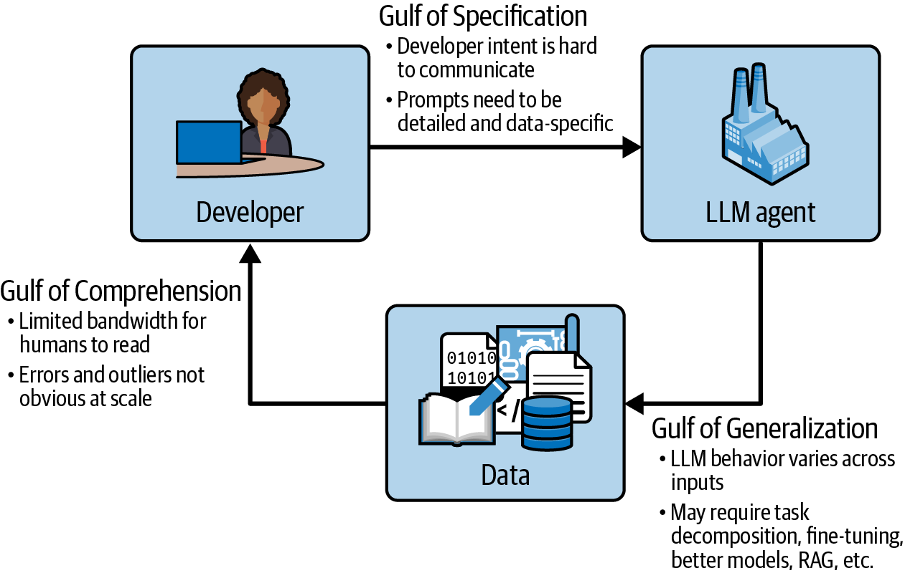

<!-- .slide: class="title-slide" --> # Zero to hero on AI agent observability ### A 3-hour hands-on workshop with Langfuse By Soumendra Kumar Sahoo <!-- .element: class="byline" --> The Data AI Guild, Hyderabad · Saturday 31 Oct 2026 <!-- .element: class="center muted" --> Note: - Block 1 (00:00). Put this up while people sit down. - Wifi and chat details go on the next slides. - Event page: [luma.com/dil7wq7j](https://luma.com/dil7wq7j) --- ## "All systems performed nominally" <figure> <img src="assets/mco-figure4-encounter-diagram.webp" alt="NASA schematic of the Mars Climate Orbiter encounter: the estimated trajectory passes 226 km above Mars, the actual trajectory 57 km"> </figure> <p class="medium">One ground file reported thruster data in pound-force-seconds. Navigation expected newton-seconds. <span class="red">lbf-s ≠ N-s</span></p> Note: - Full script, backup facts and every caveat: speaker-notes/opening-story.md. - Script (~230 words, about 1 min 45 s): - On 11 December 1998, NASA launched the Mars Climate Orbiter. [1] - It was supposed to be the first weather satellite for another planet. - Together with its sister lander, the project cost 327.6 million dollars. [3] - For nine months it flew towards Mars. On 23 September 1999 it fired its engine to go into orbit. - NASA's investigation report says: "All systems performed nominally" until the spacecraft went behind Mars. The signal never came back. [1] - What went wrong? One ground software file, called "Small Forces", gave thruster data in pound-seconds. The navigation software expected newton-seconds. [1] - Nothing crashed and no alarm went off. Every number looked like a valid number. - But each one was off by a factor of 4.45. Small errors added up over nine months. [1] - The spacecraft came in about 170 kilometres lower than planned and was lost. [1] - Here is the painful part. For months, people on the team had noticed that the navigation numbers did not agree. - The report says these were "only informally reported", sorted out over e-mail, and "not resolved". [1] - So the system was healthy and the outcome was wrong. Every component said "I'm fine." Nobody was checking whether the answer made sense. - Backup facts from the report: [1] [2] - Launch 11 Dec 1998; "All systems performed nominally until Mars's occultation loss of signal". - Small Forces in lbf-s vs N-s, factor 4.45; about 170 km lower than planned. - 57 km periapsis vs 80 km survivable. - "only informally reported", "not resolved", "relied on e-mail". - CAVEAT: $327.6M is "total for both orbiter and lander (not including Deep Space 2)". [3] - It covers the orbiter plus the Mars Polar Lander, not the orbiter alone. - Say "the project" or "the two missions together". - Slide figure: Figure 4, "Schematic MCO Encounter Diagram", Mars Climate Orbiter Mishap Investigation Board Phase I Report, NASA, 10 Nov 1999, p. 14. [1] - It shows the estimated trajectory (226 km) against the actual one (57 km). Not to scale. Sources: 1. [NASA MCO Mishap Investigation Board Phase I Report](https://llis.nasa.gov/llis_lib/pdf/1009464main1_0641-mr.pdf) 2. [NASA LLIS lesson 641](https://llis.nasa.gov/lesson/641) 3. [JPL MCO fact sheet (archived)](https://web.archive.org/web/20121003073752/http://mars.jpl.nasa.gov/msp98/orbiter/fact.html) -- ## Every metric is green. The booking is still wrong. <div class="two-column"> <div> <h3>Mars Climate Orbiter, 1999</h3> <ul> <li>Every system reported nominal</li> <li>Navigation numbers disagreed for months</li> <li>Nobody checked the outcome against the intent</li> </ul> </div> <div> <h3>TripMate, today</h3> <ul> <li>Every span is green</li> <li>Every tool call returns OK</li> <li>The customer still gets the wrong flight</li> </ul> </div> </div> Note: - Bridge line: "Our agent TripMate has its own Mars Climate Orbiter moment. Every span is green, every tool call returns OK, and the customer still gets a flight they didn't ask for. Today you'll learn to catch it before the spacecraft is gone." - Do not say what the wrong flight was. That is Case 2. - MCO facts are from the NASA report. [1] - TripMate is the workshop's synthetic agent. Sources: 1. [NASA MCO Mishap Investigation Board Phase I Report](https://llis.nasa.gov/llis_lib/pdf/1009464main1_0641-mr.pdf) --- <!-- .slide: class="chapter-slide" --> ## Part 1: Opening and first trace <!-- .element: class="text-green" --> Note: - Blocks 1 to 4. - Checkpoint 1 at 00:12 to 00:16: trace visible. -- ## Setup check <div class="two-column qr-layout"> <div> - Workshop repo: https://github.com/soumendrak/AI-Agent-Observability - Run this while I talk: `uv run ws doctor` - Success: it ends with `READY-XXXX`, your own four-character code - Not set up? Clone, `uv sync`, copy `.env.example` to `.env`, paste your Langfuse keys into `.env`, then `uv run ws doctor` · [Troubleshooting](https://github.com/soumendrak/AI-Agent-Observability/blob/main/docs/troubleshooting.md) - Pairing on one laptop is fine and encouraged - Use code "TIDYTRACES-500" if you run out of credits at Langfuse.com. - [Common Google Doc](https://docs.google.com/document/d/1jsUJTuImy6t7g07mjQZaoEPozH6wRLdznNS8_Pbjcv8/edit?usp=sharing) for collaborating. </div> <figure class="qr-figure"> <img src="assets/slides-qr.svg" alt="QR code that opens these workshop slides at slides.soumendrak.com/talks/2026/zero-to-hero-agent-observability/"> <figcaption>Scan for these slides<br><span class="qr-url">slides.soumendrak.com/talks/2026/<br>zero-to-hero-agent-observability</span></figcaption> </figure> </div> Note: - Block 1 (00:00 to 00:05). - The QR on the right opens this deck. Leave it up while people settle in. - Hands up: traced an LLM app before? Saw READY at home? - TAs check setup progress and help anyone who is stuck. - Locked laptops pair with a ready neighbour. - If behind, skip the poll. -- ## Today's Agenda <div class="agenda-container"> <div class="agenda-card"><h3>Trace</h3><p>See every step an agent takes</p></div> <div class="agenda-card"><h3>Diagnose and fix</h3><p>Find a silent failure, add a guard</p></div> <div class="agenda-card"><h3>Evaluate and monitor</h3><p>Score live runs, alert on rates, watch cost</p></div> </div> Note: - Agenda: opening 16 min, concepts 25, incident 40, break 10, evaluator 35, alerts and cost 23, production and close 21, buffers 10. - Checkpoint rule: - 80% or more: move on. - 60 to 80%: move on, and TAs keep helping. - Under 60%: I drive from the projector. -- ## Why it matters: a chatbot's answer in court - Air Canada's chatbot gave a customer wrong bereavement fare information - Air Canada argued the bot was "a separate legal entity" - The tribunal held the airline liable: C$650.88, plus interest and fees Could you prove what your bot told a customer, and why? <!-- .element: class="quote" --> Note: - Block 2 (00:05 to 00:07), about 40 seconds a slide. Ask the room the question and keep moving. - Total ordered: C$812.02 = C$650.88 damages + C$36.14 interest + C$125 fees. [2] - Coverage of the case. [1] - CAVEAT: the decision says Air Canada "did not provide any information about the nature of its chatbot". [2] - Call it a chatbot, not a GenAI agent. Sources: 1. [The Guardian: Air Canada chatbot lawsuit](https://www.theguardian.com/world/2024/feb/16/air-canada-chatbot-lawsuit) 2. [BC Civil Resolution Tribunal decision, 2024 BCCRT 149](https://www.canlii.org/en/bc/bccrt/doc/2024/2024bccrt149/2024bccrt149.pdf) -- ## Most teams trace. Fewer check the answer. <div class="metric-grid"> <div class="metric-card"><h3 class="text-blue">~89%</h3><p>have agent observability</p></div> <div class="metric-card"><h3 class="text-blue">52.4%</h3><p>run offline evals</p></div> <div class="metric-card"><h3 class="text-blue">37.3%</h3><p>run online evals</p></div> </div> Note: - Block 2. - Say: - Nearly everyone traces. Only about a third score live runs. - A trace tells you what happened. It doesn't tell you if it was right. - Today we do both. - Survey: LangChain, State of Agent Engineering, 1,340 responses, 18 Nov to 2 Dec 2025. [1] - Also: 32% cite quality as a top barrier. [1] Sources: 1. [LangChain: State of Agent Engineering](https://www.langchain.com/state-of-agent-engineering) -- ## Instrumentation is the first step. Today we close the loop. ```mermaid flowchart LR observe["observe (trace)"] --> diagnose --> fix["fix (guard)"] --> verify["verify (evaluator)"] --> monitor["monitor (alert)"] ``` Note: - Block 2 close. - Say: - This is the whole workshop on one line. - Each part of today fills in one box, left to right. - "Tracing is table stakes" echoes the survey. [1] Sources: 1. [LangChain: State of Agent Engineering](https://www.langchain.com/state-of-agent-engineering) -- ## Why me - [AI Observability Architect, PepsiCo](https://soumendrak.com/about) - [OpenTelemetry Certified Associate](https://www.soumendrak.com/blog/2026/01/opentelemetry-certification/) with 14+ Years of Experience - Creator and Maintainer of: - [Tidy Traces](https://tidytraces.com): a daily AI observability newspaper - [Widescope](https://widescope.soumendrak.com/): browser-only trace viewer for LLM and agent pipelines - [Practical Observability with Python](https://www.soumendrak.com/series/practical-observability-with-python/): 11 chapters of runnable code Views are my own. This workshop is independent of my employer. <!-- .element: class="fine" --> Note: - Block 3 (00:07 to 00:12). 60 seconds, facts only. - About me [1], Tidy Traces [2], widescope [3], observability-engineering-series [4], OTCA certification information [5]. Sources: 1. [soumendrak.com/about](https://soumendrak.com/about) 2. [Tidy Traces](https://tidytraces.com) 3. [widescope on GitHub](https://github.com/soumendrak/widescope) 4. [observability-engineering-series on GitHub](https://github.com/soumendrak/observability-engineering-series) 5. [My OpenTelemetry certification](https://www.soumendrak.com/blog/2026/01/opentelemetry-certification/) -- ## The incident: TripMate booked the wrong flight - TripMate is a travel agent bot built for this workshop - A customer complained about their booking - All data is synthetic. No real airline, no real customer. First, one normal run. <!-- .element: class="quote" --> Note: - Block 3. Teaser only. - Do not describe the fault yet. - TripMate and its data are synthetic. -- ## <span class="lab-tag">Lab 1</span> Your first trace <div class="code-block">uv run ws run "Book HYD to BLR on 2026-10-31"</div> - Same command on macOS, Linux and Windows PowerShell - Click the trace URL it prints - No network or no Langfuse account? Add `--exporter console` Lab guide: `labs/01-first-trace.md` <!-- .element: class="fine" --> Note: - Block 3. - TAs: region and key errors go to docs/troubleshooting.md. -- ## Checkpoint 1: trace visible <div class="flow-diagram">tripmate (agent) └─ LangGraph (chain) ├─ generation ├─ search_flights (tool) ├─ generation ├─ book_flight (tool) └─ generation</div> Note: - Block 4 (00:12 to 00:16). Tour my trace on the projector. - Stragglers: pair up, open a public trace, or switch to --exporter console. - The tree is simplified. The real trace also has `agent`, `tools_condition` and `tools` chains between steps. Point at the five steps, not the wrappers. -- <!-- .slide: class="recap-slide" --> ## Where we are: Part 1 of 6 <p class="recap-progress"><strong>Part 1 ●</strong> · Part 2 · Part 3 · Part 4 · Part 5 · Part 6</p> ### Part 1 · Opening and first trace <!-- .element: class="recap-now" --> - Why it matters: a chatbot's answer in court - Most teams trace. Fewer check the answer. - Today's loop: observe, diagnose, fix, verify, monitor - Lab 1: your first TripMate trace, one root with LLM and tool steps <!-- .element: class="recap-current" --> Note: - End of Block 4 (ends 00:16). Take 30 to 60 seconds of that block, then move on. - Read Part 1 aloud. Name the earlier parts in one breath each. - If behind, 15 seconds: read only the highlighted part. - Next: Part 2, Read a trace. - Summarises slides already shown. No new claims, no lab answers. --- <!-- .slide: class="chapter-slide" --> ## Part 2: Read a trace <!-- .element: class="text-green" --> 00:16 to 00:41 · spans, the agent loop, percentiles <!-- .element: class="quote" --> Note: - Blocks 5 to 9. - Checkpoint 2 at 00:41: own p99 read. -- ## Anatomy of a span - A <span class="highlight">span</span> has a name, start, duration, status, attributes and a parent - A <span class="highlight">trace</span> is a tree of spans for one request - A <span class="highlight">log</span> is one event. A <span class="highlight">metric</span> is an aggregate. Find your trace ID, the root, and shout your span count. <!-- .element: class="quote" --> Note: - Block 5 (00:16 to 00:21). - Say: - A span is one step, with a start, an end and a status. - A trace is every step of one request, as a tree. - Logs are single events, metrics are totals. The trace shows what caused what. - Optional 10 s demo of plain vs structured logs from observability-engineering-series ch1. [3] - Definitions follow OpenTelemetry. [1] [2] Sources: 1. [OpenTelemetry: traces](https://opentelemetry.io/docs/concepts/signals/traces/) 2. [OpenTelemetry: signals](https://opentelemetry.io/docs/concepts/signals/) 3. [observability-engineering-series on GitHub](https://github.com/soumendrak/observability-engineering-series) -- ## The agent loop ```mermaid flowchart LR llm1[LLM] --> tool1[tool] --> llm2[LLM] --> tool2[tool] --> llm3["LLM (final answer)"] ``` - Observation types: `agent`, `generation`, `tool`, `chain` - Every run of TripMate is wrapped in one root observation, `tripmate` Note: - Block 6 (00:21 to 00:26). Show agent.py briefly. - Say: - An agent is a loop: the model picks a tool, reads the result, picks again. - Each turn is a generation followed by a tool call. - One root wraps the whole loop, so one click opens the run. - Langfuse observation types. [1] Sources: 1. [Langfuse: observation types](https://langfuse.com/docs/observability/features/observation-types) -- ## The root holds the facts <div class="two-column"> <div> <h3><code>input.requested</code></h3> <ul><li>origin, destination, date</li><li>Parsed by plain code, not the LLM</li></ul> </div> <div> <h3><code>output.booking</code></h3> <ul><li>What the booking tool returned</li><li>Never LLM text</li></ul> </div> </div> <p class="small">Start the background load now: <code>uv run ws load -n 50</code></p> Note: - Block 6. - "Open the root tripmate. Input has requested, output has booking. Remember this." - Check the load started. -- ## <span class="lab-tag">Lab 2</span> Read a trace 1. Which span is the longest? 2. How many generations are there? 3. What arguments did each tool get? 4. How many tokens in total? 5. Root input vs root output: what do you see? Worksheet Q1 to Q5, with a partner if you have one. <!-- .element: class="small" --> Lab guide: `labs/02-read-a-trace.md` <!-- .element: class="fine" --> Note: - Block 7, window W1 (00:24 to 00:32). Stop the lab at 00:32 for the demo. - If behind, Q1 to Q3 only. - TAs check against the key on the answer sheet. - Answers are not in this public deck. -- ## Same instrumentation, real model - Same agent, a real OpenAI-compatible model, same prompt run twice - Two different traces, same tree shape - Real models vary, so today's faults are scripted Spot the difference between the two runs. <!-- .element: class="quote" --> Note: - Block 8 (00:31 to 00:36). W1 runs until 00:32, then this 3-minute demo (00:32 to 00:35), then OpenTelemetry names (00:35 to 00:36). - Demo in my own project with LLM_MODE=openai. -- ## OpenTelemetry GenAI names - `invoke_agent`: an agent run - `execute_tool`: a tool call - `gen_ai.tool.call.arguments`: what the tool was given Status: Development. Names can still change. <!-- .element: class="fine" --> Note: - Block 8. 60 seconds. - Say: - These are the vendor-neutral names. Langfuse maps its types onto them. - If you switch backends, these names come with you. - Status Development: pin your SDK version. - OTel GenAI semantic conventions. [1] Sources: 1. [OTel GenAI semantic conventions](https://github.com/open-telemetry/semantic-conventions-genai) -- <!-- .slide: id="mean-percentiles" class="latency-slide" --> ## Checkpoint 2: mean vs percentiles <p class="latency-lead">50 complete requests: <strong>49 wait 1 s</strong>, <strong class="latency-warm">one waits 30 s</strong>.</p> <div class="latency-overview"> <div> <div class="latency-ranks" data-latency-ranks role="img" aria-label="50 waits sorted shortest to longest: ranks 1 to 49 are 1 second; rank 50 is 30 seconds"></div> <p class="latency-caption">Sorted left to right, then top to bottom. Each tile is one request.</p> </div> <div class="latency-summary"> <p><span>Mean: add and divide</span><strong>(49 × 1 + 30) / 50 = 1.58 s</strong></p> <p><span>Median: middle two waits</span><strong>(1 + 1) / 2 = 1 s</strong></p> <p><span>Nearest-rank percentiles</span><strong>p95 = 1 s · p99 = 30 s</strong></p> </div> </div> <div class="latency-controls" aria-label="Inspect a percentile"> <button type="button" data-latency-percentile="95" aria-pressed="false">Show p95</button> <button type="button" data-latency-percentile="99" aria-pressed="true">Show p99</button> <span data-latency-rank-explanation aria-live="polite">p99: ⌈0.99 × 50⌉ = rank 50 → 30 s</span> </div> <div class="latency-method"> <pre><code class="mermaid">flowchart LR S["Sort the waits"] --> R["Rank = ceil(p / 100 × N)"] --> V["Read the wait at that rank"]</code></pre> </div> <p class="latency-takeaway">The mean alone cannot tell you p99. Compare both in <code>ws load</code>. <a href="#/agent-tail">Why agent steps matter → appendix</a></p> Note: - Block 9 (00:36 to 00:41). - Teaching sequence, about 3 minutes, then compare the load output: - Point at the tiles. Each is one complete request, not a step. Forty-nine people waited 1 second; the last waited 30 seconds. - Add all individual durations: 49 × 1 + 30 = 79 seconds. Divide by 50 requests: mean 1.58 seconds. Nobody in this example waited 1.58 seconds. - The median averages sorted ranks 25 and 26; both are 1 second. - Click Show p95. Calculate 0.95 × 50 = 47.5, round up to rank 48, then read 1 second. The chosen tile is outlined and labelled. - Click Show p99. Calculate 0.99 × 50 = 49.5, round up to rank 50, then read 30 seconds. - A nearest-rank percentile is a cutoff with at least that percentage of sampled waits at or below it. Ties can include more: 98% are at or below 1 second; 100% are at or below 30 seconds here. - Ask: if all 50 requests instead took 1.58 seconds, would the mean change? No. Would p99 change? Yes, to 1.58 seconds. We cannot derive p99 from the mean. - Read the last line of ws load. Compare mean and tail percentiles, and state the sample count. - The worksheet uses the ws load numbers (nearest rank). - For this sample, nearest-rank p99 is the maximum. It is not a stable estimate of production p99. [1] - NumPy's default linear method gives 15.79 seconds here: zero-based position 48.51, then 1 + 0.51 × (30 − 1). Other percentile methods can disagree. [1] - Conventional median and nearest-rank p50 can differ on other even-sized samples. They match here because the middle values tie. - 1.58 s = (49 × 1 + 30) / 50, my own calculation. - Offline: ws load -n 50 --exporter console prints the same line. - The linked appendix introduces a separate model for steps inside one request. Teach it separately; its 1% per-step assumption is not the 2% slow-request share in this example. Sources: 1. [numpy.percentile documentation](https://numpy.org/doc/stable/reference/generated/numpy.percentile.html) -- <!-- .slide: class="recap-slide" --> ## Where we are: Part 2 of 6 <p class="recap-progress">Part 1 ✓ · <strong>Part 2 ●</strong> · Part 3 · Part 4 · Part 5 · Part 6</p> - Part 1 · Opening and first trace: your first trace <!-- .element: class="recap-past" --> ### Part 2 · Read a trace <!-- .element: class="recap-now" --> - A trace is a tree of spans. A span has a name, duration, status, attributes and a parent. - The agent loop: LLM, tool, LLM. Types: `agent`, `generation`, `tool`, `chain` - The root holds the facts: `input.requested` and `output.booking`, never LLM text - OpenTelemetry GenAI names: `invoke_agent`, `execute_tool` - Read the tail, not the mean: p99, and why tails matter for agents <!-- .element: class="recap-current" --> Note: - End of Block 9 (ends 00:41). Take 30 to 60 seconds of that block, then move on. - Read Part 2 aloud. Name the earlier parts in one breath each. - If behind, 15 seconds: read only the highlighted part. - Next: Part 3, The incident. - Summarises slides already shown. No new claims, no lab answers. --- <!-- .slide: class="chapter-slide" --> ## Part 3: The incident <!-- .element: class="text-red" --> 00:41 to 01:21 · investigate, fix, rerun <!-- .element: class="quote" --> Note: - Blocks 10 to 18. - Checkpoint 3 at 01:06 (Case 2 explained). - Checkpoint 4 at 01:21 (rerun PASS). - Never cut below 15 minutes of Case 2 window. -- ## The complaint "I asked TripMate for a flight. The confirmation looked right. The ticket I got was not the trip I asked for." <!-- .element: class="quote" --> Note: - Block 10 (00:41 to 00:46). - Synthetic complaint for the workshop. - Say: - Read it out slowly. This is all the customer gives us. - Notice what's missing: no error message, no screenshot. -- ## A five-step method <sup class="optional-marker" title="Optional slide" aria-label="Optional slide">#</sup> 1. Filter level = ERROR 2. Filter type = tool 3. Sort by duration or tokens 4. Compare what was asked with what the tool did 5. Open the generation that chose the call Note: - Block 10. - The superscript # marks this as an optional slide. - Skip this slide if behind and say the steps aloud. -- ## <span class="lab-tag">Lab 3</span> Warm-up: Case 1 <div class="code-block">uv run ws case 1</div> - Find the failing step - Find which step caused it - Tell your TA your answer Lab guide: `labs/03-incident.md` <!-- .element: class="fine" --> Note: - Blocks 10 and 11, window W2 (00:43 to 00:51). - Reveal at 00:50 (00:48 if behind). - The reveal is on the TA answer sheet, not in this public deck. -- ## <span class="lab-tag">Lab 3</span> The real complaint: Case 2 <div class="code-block">uv run ws case 2</div> - Nothing is red. Read the confirmation too. - Five minutes on your own first - Goal: what went wrong, and where does it show? Note: - Block 11 launches W3 (00:51 to 01:11). - Bug bounty: first 3 correct answers, checked by a TA. - Answers and hints are on the TA answer sheet only. -- ## <span class="lab-tag">Lab 3</span> Fill the evidence table | Span | Field | What it says | What the user asked | | --- | --- | --- | --- | | … | … | … | … | | … | … | … | … | <!-- .element: class="comparison-table" --> Compare with your partner or neighbour. <!-- .element: class="small" --> Note: - Block 13 (00:56 to 01:01). Worksheet part B. - TAs listen in and nudge with questions, not answers. -- ## Checkpoint 3: one sentence What went wrong, where it shows, and why the confirmation hid it. <!-- .element: class="quote" --> A TA checks your sentence. <!-- .element: class="small" --> Note: - Block 14 (01:01 to 01:06). - Accept a verbal explanation if behind. - TAs count per zone. -- ## The text is a claim. The tool result is the fact. Debug and evaluate on facts. <!-- .element: class="quote" --> Note: - Block 15 (01:06 to 01:11). Close the investigation with the evidence comparison. - General lesson; no case specifics. - Say: - The final message is what the model says it did. - The tool result is what actually happened. - Debug, evaluate and alert on the second one. -- ## <span class="lab-tag">Lab 4</span> Fix it - Open `src/tripmate/guards.py` and find `WORKSHOP EDIT HERE` - Make `validate_booking` raise `ValueError` if origin, destination or date differ from the request - About 4 to 6 lines Lab guide: `labs/04-fix-and-rerun.md` <!-- .element: class="fine" --> Note: - Block 16, window W4 (01:11 to 01:21). - Lab guide: labs/04-fix-and-rerun.md. - Pseudo-code and the reference fix are on the instructor copy and TA answer sheet only. - If asked what the user sees: the guard runs inside `book_flight`, so the guard turns the wrong booking into a red tool error, then TripMate retries and books the right trip. -- ## <span class="lab-tag">Lab 4</span> Checkpoint 4: rerun <div class="code-block">uv run ws case 2 --rerun</div> - Expect one red `book_flight` span (your guard), then a correct booking. - Look for `booking_matches_request: PASS (local check, same logic as the Langfuse evaluator)` - Open the new trace and compare its root with the old one The guard prevents the incorrect action. The evaluator checks the recorded outcome afterwards. <!-- .element: class="quote" --> Note: - Block 17 (01:16 to 01:21). TAs check the rerun result. - Stuck more than 5 minutes: TA shows the reference fix from the answer sheet. - If the room is behind, I show the fix and rerun live from the instructor copy. -- ## Buffer A: stretch - Run Case 2 with other cities or dates like `uv run ws case 2 "Book HYD to MAA on 2026-11-05" --rerun` - Predict the local check result before you run it - Rerun Case 2 with `--guard off` and compare the two roots Note: - Block 18 (01:21 to 01:26). - Overflow for W4. -- <!-- .slide: class="recap-slide" --> ## Where we are: Part 3 of 6 <p class="recap-progress">Part 1 ✓ · Part 2 ✓ · <strong>Part 3 ●</strong> · Part 4 · Part 5 · Part 6</p> - Part 1 · Opening and first trace: your first trace - Part 2 · Read a trace: spans, the agent loop, percentiles <!-- .element: class="recap-past" --> ### Part 3 · The incident <!-- .element: class="recap-now" --> - A five-step method: filter, sort, compare what was asked with what the tool did - Case 1 warm-up, then Case 2: nothing is red, so read the confirmation too - Evidence table and one sentence: what went wrong and where it shows - The text is a claim. The tool result is the fact. - Lab 4: a guard in `guards.py`, then a rerun: `booking_matches_request: PASS (local check, same logic as the Langfuse evaluator)` <!-- .element: class="recap-current" --> Note: - End of Block 18 (ends 01:26). Take 30 to 60 seconds of that block, then move on. - Read Part 3 aloud. Name the earlier parts in one breath each. - If behind, 15 seconds: read only the highlighted part. - Next: the break, then Part 4, Build an evaluator. - Summarises slides already shown. No new claims, no lab answers. --- <!-- .slide: class="chapter-slide" --> ## Break: 10 minutes <!-- .element: class="text-sky" --> Help desk at the front for setup and reruns <!-- .element: class="quote" --> Note: - Blocks 19 and 20. - Collect zone readiness from TAs. - Cut to 7 minutes if more than 10 minutes behind. --- <!-- .slide: class="chapter-slide" --> ## Part 4: Build an evaluator <!-- .element: class="text-green" --> 01:36 to 02:11 · score every run, not just this one <!-- .element: class="quote" --> Note: - Blocks 21 to 28. - Checkpoint 5 at 01:56, Checkpoint 6 at 02:01. -- <!-- .slide: id="eval-three-gulfs" class="eval-workflow eval-gulfs" --> ## Three gulfs in building AI systems <figure class="original-gulfs"> <p></p> <figcaption>Source: <a href="https://learning.oreilly.com/api/v2/epubs/urn:orm:book:9798341660717/files/assets/aiee_0101.png">O’Reilly · original diagram</a></figcaption> </figure> Note: - Comprehension: You don’t yet understand what your inputs look like or how the system actually behaves on them; look at more traces before changing anything. - Specification: Your requirements aren’t explicit enough for the LLM to follow; revise the prompt or agent logic to close the gap. - Generalization: The requirements are clear, but the LLM still fails on some inputs. Measure how often the failure occurs, and consider stronger interventions like more examples, better retrieval, or fine-tuning. Sources: 1. [O’Reilly source diagram, asset aiee_0101.png](https://learning.oreilly.com/api/v2/epubs/urn:orm:book:9798341660717/files/assets/aiee_0101.png) -- <!-- .slide: id="eval-workflow" class="eval-workflow" --> ## How to build evals ### 1. Error analysis: discover what goes wrong ```mermaid flowchart LR traces["Collect diverse traces"] --> review["Human review: write open notes"] --> groups["Group and prioritize failures"] ``` <p><strong>Human annotation starts inside error analysis.</strong> Review examples before finalizing a rubric.</p> ### 2. Turn important failures into repeatable checks ```mermaid flowchart LR criteria["Define pass / fail"] --> build["Build code check or judge"] --> validate["Validate the evaluator"] --> repeat["Rerun after changes"] ``` <p class="workflow-loop">↺ New failures → review more traces and update the criteria and eval set.</p> <p class="workflow-source">Adapted from <a href="https://hamel.dev/blog/posts/evals-faq/">Hamel Husain & Shreya Shankar · AI Evals FAQ</a></p> Note: - Block 21, opening Part 4 within 01:36 to 01:41. About 60 seconds here, then Three ways to score quality and the existing poll. Do not extend the workshop. - This is a simplified synthesis of the FAQ, not its exact diagram or a quotation. Human annotation is part of error analysis, not a separate step that begins only after error analysis finishes. - Point along the first row: "Collect traces covering different real uses. A person familiar with the domain reads them and writes open notes about problems. Group similar problems, count them, and prioritize the ones worth addressing. That is error analysis." - Early notes describe observed problems without requiring a complete rubric. The FAQ calls this open coding; grouping notes into failure categories is axial coding. Keep the jargon in the notes unless someone asks. - Point along the second row: "Once we understand an important failure, define what passing and failing mean. Use a code check for an objective rule, or a judge for a judgment call. Check whether that evaluator works, then use the confirmed examples as a repeatable eval set." - Validation differs by method: code checks need passing, failing and edge-case tests. Judges need trusted human Pass/Fail labels, development examples and a separate held-out test set. Early discovery notes and later calibration labels serve different purposes; the same trace may be reused where appropriate without contaminating the held-out set. - For a judge, inspect disagreements with experts and measure both missed failures and false alarms. Keep the final test examples out of prompt tuning. - Point to the return arrow: "Rerun on changes. New failures send us back to the traces. Criteria and datasets evolve with the product." - TripMate teaching example: review the request and actual booking, describe a route mismatch, group that failure, define equality of the relevant requested and booked fields, test a structured check on correct and incorrect examples, and retain cases for reruns. The workshop's scripted case is a controlled teaching example, not evidence of production frequency. - Not every observed problem needs an expensive evaluator. Fix obvious bugs directly and automate checks where their value warrants the effort. Synthetic data can help start discovery when real traces are unavailable, but needs review and cannot establish production failure rates. - Source: FAQ questions on error analysis, when to write a rubric, how many examples are needed, and trusting automated evals. [1] Sources: 1. [Hamel Husain and Shreya Shankar: AI Evals FAQ](https://hamel.dev/blog/posts/evals-faq/) -- ## Three ways to score quality | Check | Strength | Cost | | --- | --- | --- | | Code | Deterministic | Cheap | | LLM-as-a-judge | Semantic | Tokens, and it can be wrong | | Human review | Ground truth | Slow | <!-- .element: class="comparison-table" --> Note: - Block 21 (01:36 to 01:41). - Cut this slide first if behind. - Langfuse evaluation methods: code evaluators [1] and LLM-as-a-judge. [2] Sources: 1. [Langfuse: code evaluators](https://langfuse.com/docs/evaluation/evaluation-methods/code-evaluators) 2. [Langfuse: LLM-as-a-judge](https://langfuse.com/docs/evaluation/evaluation-methods/llm-as-a-judge) -- <!-- .slide: id="eval-examples" class="eval-poll" --> ## Poll: which check fits each example? | Example | Evidence and criterion | | --- | --- | | **1 · PNR format** | Rule: six uppercase letters or digits.<br>Returned PNR: `AB12`. Does it meet the format rule? | | **2 · Booking accuracy** | Requested: DEL → BOM, **1 Nov**.<br>Booked: DEL → BOM, **2 Nov**. Message: “Your requested trip is booked.” | | **3 · Reply tone** | The booking matches the request.<br>Reply: “Booked. Next time, try reading the instructions.” Criterion: polite and helpful. | <!-- .element: class="comparison-table" --> <div class="eval-poll-options"><span><strong>A</strong> · Regex / format check</span><span><strong>B</strong> · Structured comparison</span><span><strong>C</strong> · LLM judge with a rubric</span></div> <p class="eval-poll-question">For each example: which check would you choose, and what evidence does it need?</p> Three synthetic examples. Choose the simplest suitable check. <!-- .element: class="fine" --> Note: - Block 21 poll. - Allow about 90 seconds: 15 seconds to read, then ask for an A/B/C choice and the evidence needed for each example. This fits inside Block 21; do not add a new time block. - These are independent synthetic discussion examples, not new runnable TripMate cases. The six-character PNR rule is stipulated for this exercise, not asserted as a universal airline rule. - Example 1: A is the simplest default. A full-string format check such as [A-Z0-9]{6} rejects AB12 because it is four characters long. Its input is the actual returned PNR, not just a success message. Matching the format does not establish that a booking exists or is correct. - Example 2: B is the simplest default. Compare the structured requested date with the actual booking date: 1 Nov versus 2 Nov. Its inputs must include both request and booking. A regex that merely sees “booked” in the confirmation would pass the text while missing the wrong date. An LLM judge could also find the mismatch if given both records, but exact field equality does not require a model. - Example 3: C is a reasonable default for judging tone across varied wording. Give the judge the user context, final reply, and a rubric for polite, respectful and helpful language. The structured booking check can pass while tone fails. A regex for this one phrase would not cover general tone, paraphrases or context. - Human review can assess these examples and supplies reference labels for calibrating the tone judge. Do not present an LLM judge as infallible or treat human labels as automatically unanimous. - Accept another method if the participant explains why it is suitable, what evidence it receives, and its cost or limitations. This is a choice of a sensible default, not a claim that only one method can evaluate each case. - Close by asking: can a judge receiving only “Your requested trip is booked” verify the actual booking? No: it needs the request and the recorded booking outcome. - Copy-ready format and tone evaluators are linked from speaker-notes/evaluator-setup.md for anyone who wants to implement the poll examples after the discussion. -- ## <span class="lab-tag">Lab 5</span> Build the code evaluator 1. Evaluators → New → Code evaluator → Python 2. Paste `evals/booking_matches.py` from the repo 3. Filter: Is Root Observation = true, Name = `tripmate` 4. Don't save yet <p class="fine">Lab guide: <code>labs/05-evals.md</code> · <a href="#/eval-code-setup">Full Langfuse setup</a></p> Note: - Block 22 demo (01:41 to 01:46), then block 23, window W5 (01:46 to 02:01). - Lab guide: labs/05-evals.md. - Common slips: not targeting root, not selecting a sample. - Full setup walkthrough: appendix slides eval-code-setup, eval-judge-setup and eval-rules-setup. Copy-ready guide: speaker-notes/evaluator-setup.md. - The local assets/evaluators/booking_matches.py file is a copy of the participant repo's evals/booking_matches.py. Paste the whole file; Langfuse supplies EvaluationContext, EvaluationResult and Score. - Code reads the matched root's input and output directly. Code evaluators do not use a judge-style variable mapping screen. - Test first, save second. Saving a definition alone does not enable evaluation of new traffic; attach an online rule in Checkpoint 6. - Langfuse code evaluators: [1] - need observations from an OTel-based SDK (Python SDK v3+) - standard library only, no network - 2-second limit Sources: 1. [Langfuse: code evaluators](https://langfuse.com/docs/evaluation/evaluation-methods/code-evaluators) -- ## <span class="lab-tag">Lab 5</span> Checkpoint 5: test it - Test on your old Case 2 trace - Test on your rerun trace - Confirm both results match what you expect Note: - Block 24 (01:51 to 01:56). - Expected results are on the TA answer sheet. - If the test errors, check whether input arrives as a dict or a JSON string. - If behind, test only the rerun trace. -- ## <span class="lab-tag">Lab 5</span> Checkpoint 6: run on traffic <div class="code-block">uv run ws load -n 15 --case 0 uv run ws load -n 15 --case 2 --guard off uv run ws case 2 --rerun</div> - Save the evaluator with a rule on new data first - Filter traces by `booking_matches_request` Note: - Block 25 (01:56 to 02:01). - Use -n 5 each if behind. - Langfuse evaluator rules. [1] Sources: 1. [Langfuse: code evaluators](https://langfuse.com/docs/evaluation/evaluation-methods/code-evaluators) -- ## Demo: LLM-as-a-judge - Judge prompt: "Does the booking match the request?" - Needs an LLM connection, meaning a provider key - Costs tokens on every scored observation Code or judge for this? <!-- .element: class="quote" --> <p class="fine"><a href="#/eval-judge-setup">Setup walkthrough</a> · <a href="assets/evaluators/booking_judge.md">Copy-ready judge prompt</a></p> Note: - Block 26 (02:01 to 02:06). In my own project. - If behind, cut this demo first. - Calibration details: Appendix. - Setup: Settings → LLM Connections, choose a model with structured outputs, then Evaluators → New evaluator → LLM-as-a-Judge. Use the System and User messages in assets/evaluators/booking_judge.md. - Score type Boolean; score name booking_matches_request_judge. Map input to Observation Input and output to Observation Output. Select root tripmate samples to test, then save and attach a rule. - The judge must receive both requested intent and the actual booking. Giving it only final_message cannot establish booking correctness. It does not automatically inspect child spans. - TripMate stays in LLM_MODE=fake. The judge uses a separate real model connection in Langfuse; do not switch the participant agent into real-model mode for this exercise. - Full setup guide, sample filters and troubleshooting: speaker-notes/evaluator-setup.md. Online-rule walkthrough: appendix eval-rules-setup. - Langfuse LLM-as-a-judge docs. [1] Sources: 1. [Langfuse: LLM-as-a-judge](https://langfuse.com/docs/evaluation/evaluation-methods/llm-as-a-judge) -- ## Which check catches which case? | Check | Case 0 | Case 1 | Case 2 | Case 2 fixed | | --- | --- | --- | --- | --- | | Text regex | ? | ? | ? | ? | | Structured eval | ? | ? | ? | ? | | LLM judge | ? | ? | ? | ? | <!-- .element: class="comparison-table" --> <p class="small">Use code evals for facts and judges for semantics. <a href="#/eval-code-setup">Setup instructions</a></p> Note: - Block 27 (02:06 to 02:11). About 4 minutes here, then 1 minute on pass^k. - The room fills cells aloud. - Define the text regex before asking: it checks only whether final_message begins with Booked. Its score name is confirmation_says_booked. It is intentionally weak, so a true result is not evidence of a correct booking. - Structured eval means booking_matches_request; the judge uses the same booking-correctness criterion with full root input and output, under score name booking_matches_request_judge. - Ask for each check's predicted reported score, not a tick meaning “an error was detected.” Distinguish a check's verdict from whether the actual task succeeded. - The setup guide includes the expected comparison and copy-ready code. Judge results must be observed and discussed, not assumed to agree: speaker-notes/evaluator-setup.md. - Appendix walkthroughs: eval-code-setup, eval-judge-setup and eval-rules-setup. Open these if participants need the configuration steps. -- <!-- .slide: class="chapter-slide eval-takeaway" --> ## Let <span class="highlight">failures</span> write your evals Note: - Takeaway for Part 4. This phrasing is our workshop adaptation, not a direct quotation. - Say: "The workflow at the start of this part begins with observed failures. Choose the important ones, then write checks that help us improve." - Inspired by Hamel Husain and Shreya Shankar's AI Evals FAQ: https://hamel.dev/blog/posts/evals-faq/ -- <!-- .slide: class="recap-slide" --> ## Where we are: Part 4 of 6 <p class="recap-progress">Part 1 ✓ · Part 2 ✓ · Part 3 ✓ · <strong>Part 4 ●</strong> · Part 5 · Part 6</p> - Part 1 · Opening and first trace: your first trace - Part 2 · Read a trace: spans, the agent loop, percentiles - Part 3 · The incident: the text is a claim, the tool result is the fact <!-- .element: class="recap-past" --> ### Part 4 · Build an evaluator <!-- .element: class="recap-now" --> - Three ways to score: code, LLM-as-judge, human review - Lab 5: a code evaluator on root `tripmate` observations - Tested on the old Case 2 trace and the rerun, then run on traffic - LLM-as-judge: semantic, but needs a provider key and costs tokens - Code evals for facts, judges for semantics - pass^k: an agent that acts must be right every time <!-- .element: class="recap-current" --> Note: - Block 28 (02:11 to 02:16). Take 30 to 60 seconds for this recap, then move on. - Read Part 4 aloud. Name the earlier parts in one breath each. - If behind, 15 seconds: read only the highlighted part. - Next: Part 5, Monitor and alert. - Summarises slides already shown. No new claims, no lab answers. --- <!-- .slide: id="monitor-overview" class="chapter-slide monitor-slide" --> ## Part 5: Monitor and alert <!-- .element: class="text-green" --> 02:16 to 02:39 · How will we know if TripMate starts failing again? <!-- .element: class="quote" --> ```mermaid flowchart LR score["Score each booking"] --> watch["Watch results over time"] --> act["Investigate when needed"] ``` <p class="monitor-lead center">Quality · Missing measurements · Cost per success</p> Note: - Blocks 29 to 33. Keep the existing 23-minute slot. - Opening script: "We fixed TripMate. But how will we know if it starts failing again? In Part 4 we checked individual bookings. In Part 5 we watch those results over time, decide when someone should investigate, and measure the resources spent on a successful booking." - Point left to right along the diagram. A trace records execution; an evaluator produces a score; monitoring aggregates measurements; an alert calls for investigation. An alert does not automatically fix TripMate. - The worked examples here are illustrative, not measurements from a real customer system. - Checkpoint 7 at 02:34: explain ALERT vs NO_DATA. - Full rehearsal script and demo steps: speaker-notes/monitoring-alerts.md. -- <!-- .slide: id="monitor-signals" class="monitor-slide" --> ## Four signals to watch <dl class="monitor-signal-list"> <div><dt>Eval pass rate</dt><dd>Did we book what was requested?</dd><dd>Quality of the outcome</dd></div> <div><dt>p95 latency</dt><dd>How long do slower answers take?</dd><dd>Customer waiting time</dd></div> <div><dt>Tool error rate</dt><dd>Are search or booking calls failing?</dd><dd>Execution failures</dd></div> <div><dt>Tokens per run</dt><dd>Is each attempt using more tokens?</dd><dd>Resource consumption</dd></div> </dl> <p class="monitor-takeaway fragment">A reversed booking can return OK. Which signal catches it?</p> Note: - Block 29 (02:16 to 02:21). Allow about 30 seconds for the opening bridge, 60 seconds here, 60 seconds for the rate example, and 2 minutes for false alarms. Use the remaining time for transitions. - Say: "Quality: was the requested booking made? Latency: how long did the customer wait? Errors: did a tool fail? Tokens: how much model usage did an attempt consume?" - Advance once to ask the question. Expected answer: the booking-matches-request evaluator. The tool may execute the wrong arguments successfully, so tool error rate alone misses the wrong outcome. - Ask which signal deserves an urgent notification. There is no universal answer: urgency depends on impact. For TripMate, a harmful wrong booking can merit immediate action even if it happens once. - A chart is something we watch; an alert is a condition that asks someone to act. Avoid paging on every metric just because it exists. -- <!-- .slide: id="monitor-rates" class="monitor-slide" --> ## Alert on rates and symptoms <p class="monitor-lead">One window · 100 scored booking attempts · one score per attempt</p> <div class="monitor-columns"> <div> <div class="monitor-score-grid" role="img" aria-label="100 scored attempts: 85 pass, labelled P; 15 fail, labelled F"> <span>P</span> <span>P</span> <span>P</span> <span>P</span> <span>P</span> <span>P</span> <span>P</span> <span>P</span> <span>P</span> <span>P</span> <span>P</span> <span>P</span> <span>P</span> <span>P</span> <span>P</span> <span>P</span> <span>P</span> <span>P</span> <span>P</span> <span>P</span> <span>P</span> <span>P</span> <span>P</span> <span>P</span> <span>P</span> <span>P</span> <span>P</span> <span>P</span> <span>P</span> <span>P</span> <span>P</span> <span>P</span> <span>P</span> <span>P</span> <span>P</span> <span>P</span> <span>P</span> <span>P</span> <span>P</span> <span>P</span> <span>P</span> <span>P</span> <span>P</span> <span>P</span> <span>P</span> <span>P</span> <span>P</span> <span>P</span> <span>P</span> <span>P</span> <span>P</span> <span>P</span> <span>P</span> <span>P</span> <span>P</span> <span>P</span> <span>P</span> <span>P</span> <span>P</span> <span>P</span> <span>P</span> <span>P</span> <span>P</span> <span>P</span> <span>P</span> <span>P</span> <span>P</span> <span>P</span> <span>P</span> <span>P</span> <span>P</span> <span>P</span> <span>P</span> <span>P</span> <span>P</span> <span>P</span> <span>P</span> <span>P</span> <span>P</span> <span>P</span> <span>P</span> <span>P</span> <span>P</span> <span>P</span> <span>P</span> <span class="fail">F</span> <span class="fail">F</span> <span class="fail">F</span> <span class="fail">F</span> <span class="fail">F</span> <span class="fail">F</span> <span class="fail">F</span> <span class="fail">F</span> <span class="fail">F</span> <span class="fail">F</span> <span class="fail">F</span> <span class="fail">F</span> <span class="fail">F</span> <span class="fail">F</span> <span class="fail">F</span> </div> <p class="monitor-legend"><span>P = 85 pass</span><span class="monitor-warn">F = 15 fail</span></p> </div> <div> <p class="monitor-equation fragment" data-fragment-index="0">Average score = sum of scores ÷ score count</p> <p class="monitor-result fragment" data-fragment-index="0">85 ÷ 100 = 85%</p> <p class="monitor-equation fragment" data-fragment-index="1">85% < 90% → <strong>ALERT</strong></p> <p class="monitor-caption">90% is a workshop threshold, not a production target.</p> </div> </div> <p class="monitor-takeaway">Window = which results? Threshold = when to investigate?</p> Note: - Block 29. Start with the grid. Say: "Each tile is one scored attempt. A match scores 1; a mismatch scores 0. There are 85 ones and 15 zeroes." - First advance: "Their sum is 85. Divide by 100 scores and we get 0.85, or an 85% measured pass rate. The average of boolean scores is the share that pass." - Second advance: "Our example condition is below 0.9. Because 0.85 is below 0.9, it becomes ALERT. Exactly 0.9 would not breach this strict less-than condition." - Window means the lookback period, not the evaluation frequency. Every evaluation queries matching scores in that period. Choose an available window during the rehearsal; do not invent the interval. - Denominator: scores, not all requests. If 100 attempts occur but only 10 receive scores, the rate describes those 10. Watch scoring coverage and delays too. - A separate count alert can flag few scores. It does not gate or silence this rate alert. - Say: "A single harmful booking can require immediate action. Rates help us detect broader deterioration; they are not permission to ignore individual harm." - 90% is chosen to make the demo easy to see. It is not an acceptable wrong-booking allowance. Production conditions should reflect impact and a defined service objective. - Burn rate is in the appendix; it measures error-budget consumption relative to the allowed rate. - Boolean-score behavior: [1]. Alert design and user impact: [2]. Grid and arithmetic are illustrative. Sources: 1. [Langfuse: alerts](https://langfuse.com/docs/observability/features/alerts) 2. [Google SRE workbook: alerting on SLOs](https://sre.google/workbook/alerting-on-slos/) -- <!-- .slide: id="monitor-false-alarms" class="monitor-slide" --> ## Why a good check can raise false alarms <p class="monitor-lead">Illustration: 1,000 runs · 2% actually bad · 95% sensitivity and specificity</p> <table class="monitor-matrix"> <thead><tr><th scope="col">What the check says</th><th scope="col">Actually bad: 20</th><th scope="col">Actually good: 980</th></tr></thead> <tbody> <tr><th scope="row">Flags a problem</th><td><strong>19</strong> true alarms</td><td><strong class="monitor-warn">49</strong> false alarms</td></tr> <tr><th scope="row">Does not flag</th><td>1 missed failure</td><td>931 correct passes</td></tr> </tbody> </table> <div class="fragment"> <div class="monitor-alarm-bar" role="img" aria-label="Of 68 flagged runs, 19 are true alarms and 49 are false alarms"><span style="width:27.941176%">19 true</span><span style="width:72.058824%">49 false</span></div> <p class="monitor-equation">True alarms among flags = 19 ÷ (19 + 49) ≈ <strong>28%</strong></p> </div> <p class="monitor-takeaway">Rare failures amplify false alarms. Validate the check; inspect rates and counts.</p> Note: - Block 29. Use counts first; do not begin with Bayes notation. - Script: "Imagine we know the ground truth. Of 1,000 runs, 20 are bad and 980 are good. A 95% sensitive check catches 19 of the 20 bad runs and misses one. A 95% specific check correctly clears 931 good runs, but incorrectly flags 49." - Advance: "That gives 68 flags: 19 true and 49 false. If we notify on every flag, most notifications in this example are false, even though both sensitivity and specificity are 95%. Good runs are much more common." - Sensitivity: share of actually bad runs detected. Specificity: share of actually good runs correctly cleared. Precision: share of flags that are actually bad. They answer different questions. - Optional formula for a question: precision = (0.95 × 0.02) / ((0.95 × 0.02) + (0.05 × 0.98)) = 27.94%. - The title applies to this hypothetical detector; it is not a claim that most real alerts everywhere are false. This is not a measured accuracy estimate for booking_matches_request. - Important: averaging over a window does not fix a biased or inaccurate evaluator. Validate the check against known examples. Windowed rates reduce sensitivity to isolated fluctuations; sample counts show how much evidence supports the rate. - Deterministic checks can also be wrong through incorrect criteria, inputs, or implementation. LLM judges need calibration against human labels. - All counts and probabilities are a worked example, not workshop telemetry. -- <!-- .slide: id="monitor-config" class="monitor-slide" --> ## Demo: create the alert <p class="monitor-lead">Langfuse → Alerts → New Alert</p> <dl class="monitor-config"> <div><dt>Measure</dt><dd>Scores (boolean) · average</dd></div> <div><dt>Score filter</dt><dd><code>booking_matches_request</code></dd></div> <div><dt>Condition</dt><dd>Below <strong>0.9</strong> · choose a lookback window</dd></div> <div><dt>Missing scores</dt><dd><strong>Show severity NO_DATA</strong></dd></div> <div><dt>Notification</dt><dd>Select an existing automation when a message is needed</dd></div> </dl> <p class="monitor-takeaway fragment">No scores ≠ 0% passing. Missing measurements need their own state.</p> <p class="monitor-caption">Optional attendee exercise: Lab 6 · Alerts</p> Note: - Block 30 (02:21 to 02:26), 5 minutes. Use the live project only after rehearsal; never claim these slides have created alerts. - Before the workshop: verify that the Part 4 evaluator writes boolean booking_matches_request scores. Pick the same score name, environment and TripMate scope used by the evaluator. A numeric score with the same name is a different data source. - Script while pointing: "We choose the boolean scores, average them, filter to our evaluator, then compare the result with 0.9 over a lookback window." - Choose and say the available window in the live UI. Evaluation is scheduled, not instantaneous. The actual evaluation interval still needs to be observed in rehearsal. - Advance: "For missing scores choose NO_DATA. Otherwise the default substitutes zero, which breaches our below-0.9 condition even though nothing was measured." - For a notification, link an existing alert automation. An Admin or Owner can create an automation if needed. A visible ALERT state and a delivered message are separate things to verify. - Show severity NO_DATA records the state without notifying. In a production context where scores should keep arriving, Notify after sustained NO_DATA can notify after a delay; choose the delay to tolerate normal evaluation latency. - Optional attendee guide: labs/06-alerts.md in the workshop repo. Hobby currently permits 2 alerts; recheck before promising attendee capacity. - Optional second alert: count of matching scores below 10, to flag a small denominator. This alert does not suppress the pass-rate alert. - If the live UI is unavailable, teach the labelled configuration guide; do not present it as live evidence. - UI behavior and roles: [1]. Sources: 1. [Langfuse: alerts](https://langfuse.com/docs/observability/features/alerts) -- <!-- .slide: id="monitor-no-data" class="monitor-slide" --> ## ALERT vs NO_DATA <p class="monitor-lead">Same window · condition: pass rate < 90% · no-data mode: Show severity NO_DATA</p> <div class="monitor-states"> <div><h3>Measured failures</h3><p>85 pass / 100 scores</p><p class="monitor-result">85%</p><p class="monitor-state">ALERT</p><p>We measured a breach.</p></div> <div><h3>Every score failed</h3><p>0 pass / 100 scores</p><p class="monitor-result">0%</p><p class="monitor-state">ALERT</p><p>We measured zero passes.</p></div> <div><h3>No scores arrived</h3><p>0 scores in the window</p><p class="monitor-result">?</p><p class="monitor-state">NO_DATA</p><p>We cannot calculate a rate.</p></div> </div> <p class="monitor-state-rule fragment">Default mode: missing → substitute 0 → ALERT<br>Selected mode: missing → NO_DATA</p> <p class="monitor-takeaway">An empty thermometer display does not mean the temperature is zero.</p> Note: - Block 31 (02:26 to 02:31), 5 minutes. - Start with the first two columns. "85 passes out of 100 is 85%. No passes out of 100 is a measured zero. Both breach our demo threshold." - Point to the third. "No scores means no denominator. Zero divided by zero is undefined. We do not know the pass rate. NO_DATA expresses that uncertainty." - Advance: "The default missing-data mode substitutes zero. That is a configured behavior, not evidence that all bookings failed. With Show severity NO_DATA, the alert reports the absence of scores instead." - If rehearsed, show two real alerts over an empty window: default and NO_DATA modes. Do not promise the state before verifying the selected filters and window contain no scores. Existing scores remain in a rolling window until they age out. - Then use uv run ws load -n 40 --case 2 --guard off only with the workshop's simulated LLM mode and the failing Case 2 behavior verified. Wait for evaluator scores and scheduled alert evaluation; inspect actual score values rather than claiming an immediate transition. - The deterministic simulator supplies the wrong booking behavior; the evaluator and aggregation still demonstrate how alerts consume scores. It is not evidence of a real LLM failure rate. - Show severity NO_DATA does not notify. Notify after sustained NO_DATA is a separate mode for expected traffic and scoring, with a delay. - Missing scores can mean no traffic, evaluator failure or delay, ingestion delay, or filters that match nothing. The next slide distinguishes these. - Prebuilt-alert states, interval and notification delivery still need live rehearsal. If unavailable, use these clearly illustrative numbers. Sources: 1. [Langfuse: alerts](https://langfuse.com/docs/observability/features/alerts) -- <!-- .slide: id="monitor-checkpoint" class="monitor-slide" --> ## Checkpoint 7: predict the state <p class="monitor-lead">No matching scores in the window. Is TripMate failing, or are we missing measurements?</p> ```mermaid flowchart LR missing["No matching scores"] --> traffic{"Matching TripMate traces?"} traffic -->|"Yes"| pipeline["Check evaluator, delay and filters"] traffic -->|"No"| quiet["Check traffic and trace ingestion"] ``` <p class="monitor-scenario">A. The evaluator stopped; booking traces continue.<br>B. Nobody made a booking request.</p> <p class="monitor-equation fragment">Both can show <strong>NO_DATA</strong>. Trace counts help distinguish them.</p> <p class="monitor-caption">Compare the same scope and period. Recent scores may still be processing.</p> Note: - Block 32 (02:31 to 02:36). Discuss until 02:35; keep the spare minute for earlier explanation. - Ask before revealing: "In A, what would default missing-as-zero show under our pass-rate condition? What would NO_DATA mode show? Now consider B. Can score count alone distinguish them?" - Reveal answer: default is ALERT in either case once the query returns no data; selected NO_DATA mode is NO_DATA in either case. It does not diagnose why scores are missing. - A: matching traces exist but scores do not. Check evaluator execution, processing backlog or delay, score name/type, eligibility and alert filters. - B: if no requests arrived, missing scores may be expected. Compare request traffic with trace ingestion too; no traces can also mean broken tracing rather than a quiet service. - Use the same environment, TripMate trace scope, score name and lookback period. An evaluator sampling less than 100% needs an expected coverage baseline. - In both scenarios the alert query must actually be empty. If earlier scores remain in the lookback window, the state may still reflect those scores. - Say: "NO_DATA tells us a measurement is absent. We need another signal to explain the absence." -- <!-- .slide: id="monitor-cost" class="monitor-slide" --> ## Cost per successful task <p class="monitor-lead">Illustration: 100 attempts use 300,000 tokens · only 90 succeed</p> <div class="monitor-columns"> <div class="monitor-cost-bars" role="img" aria-label="3000 tokens per attempt compared with approximately 3333 tokens per successful task, about 11 percent higher"> <div><p>Per attempt: <strong>3,000 tokens</strong></p><span style="width:90%"></span></div> <div class="fragment" data-fragment-index="0"><p>Per success: <strong>3,333 tokens</strong> · about 11% more</p><span style="width:100%"></span></div> </div> <div> <p class="monitor-equation">300,000 ÷ 100 = 3,000<br><span class="fragment" data-fragment-index="0">300,000 ÷ 90 ≈ <strong>3,333</strong></span></p> <p class="monitor-caption">The numerator includes usage from failed attempts and retries.</p> </div> </div> <p class="monitor-takeaway">Cost per success = total cost of all attempts ÷ successful tasks</p> <p class="monitor-caption">LLM cost = Σ (usage × applicable price), across calls and usage types.<br>Input and output prices differ. Simulated calls here are not provider charges.</p> Note: - Block 33 (02:36 to 02:39), 3 minutes including recap. About 2 minutes here. - Start: "Our illustrative token budget is 3,000 per attempt. A hundred attempts use 300,000 tokens. That looks on budget. But ten attempts fail." - Advance: "Only 90 tasks succeeded. The same 300,000 tokens bought 90 successes, so each success took about 3,333 tokens on average: 11% more. Failed work still consumed resources." - The toy example assumes each attempt is a separate task, no retry later turns one of the 10 failures into a success, and every attempt uses 3,000 tokens. With retries, group attempts by task and count each successful task once. - Tokens are a usage measure, not money. To compute dollar cost, sum each generation's input tokens times its input price and output tokens times its output price, plus any other billed usage categories. Then sum across all calls and attempts. Account for tool charges separately if applicable. - Equal token counts need not have equal dollar cost when models, input/output mixes or caching differ. The bars compare tokens, not dollars. - Langfuse accepts generation usage/cost; when a matching model price is available, it can calculate cost from usage. Explicit ingested cost takes precedence. [1] - The workshop uses simulated LLM calls for fault cases. Any synthetic usage is illustrative, not a real provider bill. Real provider and evaluator calls, if enabled, are separate sources of actual spend. - Say: "Track the cost of delivering the successful outcome, including the attempts that did not work." - Definition of success here is the task outcome checked against intent, not simply absence of an exception or a fluent final message. Sources: 1. [Langfuse: token and cost tracking](https://langfuse.com/docs/observability/features/token-and-cost-tracking) -- <!-- .slide: class="recap-slide monitor-recap" --> ## Where we are: Part 5 of 6 <p class="recap-progress">Part 1 ✓ · Part 2 ✓ · Part 3 ✓ · Part 4 ✓ · <strong>Part 5 ●</strong> · Part 6</p> - Part 1 · Opening and first trace: your first trace - Part 2 · Read a trace: spans, the agent loop, percentiles - Part 3 · The incident: investigate, fix, rerun - Part 4 · Build an evaluator: score individual bookings <!-- .element: class="recap-past" --> ### Part 5 · Monitor and alert <!-- .element: class="recap-now" --> - Watch scored outcomes over time: 85 / 100 = 85% pass - Investigate breaches; validate the evaluator and check counts - ALERT = measured breach; NO_DATA = no matching measurements - Include failed attempts in cost per successful task <!-- .element: class="recap-current" --> Note: - End of Block 33 (ends 02:39). Take 30 to 60 seconds; do not add time to the schedule. - Closing script: "Watch whether TripMate succeeds, whether measurements are arriving, and what each successful task costs. When a condition breaches, investigate the traces. When measurements disappear, investigate the measurement pipeline and traffic." - Name the earlier parts in one breath; read the four current bullets. - Next: Part 6, Take it to production. - Recaps material already taught; no new demo claim. --- <!-- .slide: class="chapter-slide" --> ## Part 6: Take it to production <!-- .element: class="text-green" --> 02:39 to 03:00 <!-- .element: class="quote" --> Note: - Blocks 34 to 36. -- ## The loop, again ```mermaid flowchart LR observe["observe (trace)"] --> diagnose["diagnose (compare request vs tool)"] --> fix["fix (guard)"] --> verify["verify (local check + evaluator)"] --> monitor["monitor (alert with NO_DATA)"] ``` Could you prove what your bot told a customer? Yes: the root span holds the request and the booking. <!-- .element: class="quote" --> Note: - Block 34 (02:39 to 02:50), 11 minutes: - this slide, Turn the incident into a test, and a flash of the checklist, 02:39 to 02:44 - Minimum setup for a small team, 02:44 to 02:47 - Instrumentation overhead and load testing, 02:47 to 02:50 - The quote answers the Air Canada question from Part 1. - Add: only if you keep the traces. Set trace retention to match how long complaints and disputes can arrive. -- ## Turn the incident into a test - Save the Case 2 run as a dataset item: the request in, the expected booking out - Run the dataset on every prompt, model or code change - Score it with the same check as `booking_matches.py` - A fixed bug stays fixed Online evals catch it in production. Offline evals catch it before. <!-- .element: class="quote" --> Note: - Block 34, about 3 minutes. Talk-through, no lab. - Say: - Today we verified with a local check and an online evaluator. - The missing piece is a regression test. Every incident becomes a dataset item. - Then a prompt tweak that brings the bug back fails before it ships. - Part 1 survey: 52.4% run offline evals. [1] - Langfuse turns traces and feedback into dataset items and runs experiments on them. [2] - Not in the lab repo. Point people to the Langfuse guide. Sources: 1. [LangChain: State of Agent Engineering](https://www.langchain.com/state-of-agent-engineering) 2. [Langfuse: from user feedback to evaluation datasets](https://langfuse.com/resources/engineering/user-feedback-to-evaluation-datasets) -- ## Production checklist (1/2) 1. Trace every LLM and tool call with OTel-based instrumentation 2. Put the structured request and tool result on the root span 3. Validate tool arguments before any action that changes something 4. Set span status to ERROR and record exceptions, even on recovery 5. Propagate session, user and release IDs 6. Cap steps and retries, and record when the cap is hit Note: - Block 34. - Flash this as reference, about 15 seconds. Don't read it out. - Full list: docs/production-checklist.md in the workshop repo. - OTel GenAI conventions. [1] Sources: 1. [OTel GenAI semantic conventions](https://github.com/open-telemetry/semantic-conventions-genai) -- ## Production checklist (2/2) 7. Track p50, p95, p99 latency, tool error rate, tokens and cost per run 8. Run a structured code eval on live traffic for your costliest mistake 9. Calibrate any LLM judge against human labels before alerting on it 10. Alert on rates over windows, with explicit no-data handling 11. Tail-sample: keep all errors and slow runs 12. Redact PII before export. Keep keys out of traces. Note: - Block 34. - Flash this as reference, about 15 seconds. Minimum setup is next. - Checklist sources: Langfuse alerts [1] and the Google SRE workbook. [2] Sources: 1. [Langfuse: alerts](https://langfuse.com/docs/observability/features/alerts) 2. [Google SRE workbook: alerting on SLOs](https://sre.google/workbook/alerting-on-slos/) -- ## Minimum setup for a small team 1. Trace every LLM and tool call 2. Put the request and tool result on the root span 3. One code eval on live traffic, for your costliest mistake 4. One alert on a rate, with NO_DATA handled 5. Redact PII before export Note: - Block 34 (02:44 to 02:47), 3 minutes. - These are checklist items 1, 2, 8, 10 and 12. The other seven are 3 to 7, 9 and 11. - Which five, and what can wait, is my recommendation. - If you can only measure a few things, pick a few: Google SRE says to focus on four golden signals (latency, traffic, errors, saturation) if you can only measure four. [1] - Say it plainly: a team of two does not need all twelve on day one. - If a sixth: tokens and cost per run (checklist 7), from Part 5. Sources: 1. [Google SRE book: monitoring distributed systems](https://sre.google/sre-book/monitoring-distributed-systems/) -- ## Instrumentation overhead and load testing <div class="two-column"> <div> <h3>Keep tracing cheap</h3> <ul> <li>Batch and export asynchronously</li> <li>Tail-sample: keep all errors and slow runs, sample the rest</li> <li>Keep attributes small</li> </ul> </div> <div> <h3>Load test safely</h3> <ul> <li>Stubbed tools and a recorded or mock model</li> <li>Fixed concurrency, in a sandbox with no real side effects</li> <li>Watch p95 latency, error rate and tokens per run</li> </ul> </div> </div> Note: - Block 34 (02:47 to 02:50), 3 minutes. Talk-through, no lab. - Batching: the OpenTelemetry SDK has a batching span processor that exports finished spans in batches. The simple processor exports each span as soon as it finishes. [1] - Langfuse says its SDKs send trace data asynchronously in the background, queued locally and flushed in batches. [2] - Tail sampling decides after it has seen the whole trace, so it can always keep traces with errors and sample on latency. [3] - CAVEAT: tail sampling is hard to run. It needs a stateful component such as the Collector's tail sampling processor. [3] - Langfuse's `sample_rate` is set in the client, and the SDK samples on the trace level. My reading: that is not tail sampling, so it cannot keep every error by itself. [4] - If volume is small, keep everything and sample later. Details: Appendix, sampling and PII. - Keep attributes small: my recommendation. - Load testing: my recommendation. - Real tools have side effects, so stub them. - A real model costs tokens on every run and adds provider rate limits and noise, so use a recorded or mock model. - Fixed concurrency makes two runs comparable. - A sandbox means no real bookings, emails or payments, whatever the agent does. - Latency and errors are two of the four golden signals. [5] - Tokens per run is the Part 5 cost signal. - This answers two survey questions: lightweight instrumentation, and sandboxing an agent for load testing. Sources: 1. [OpenTelemetry: trace SDK, built-in span processors](https://opentelemetry.io/docs/specs/otel/trace/sdk/) 2. [Langfuse: observability overview, FAQ on latency](https://langfuse.com/docs/observability/overview) 3. [OpenTelemetry: sampling](https://opentelemetry.io/docs/concepts/sampling/) 4. [Langfuse: sampling](https://langfuse.com/docs/observability/features/sampling) 5. [Google SRE book: monitoring distributed systems](https://sre.google/sre-book/monitoring-distributed-systems/) -- ## What we didn't cover - Trajectory evals: the wrong tool, loops, redundant calls - Multi-turn sessions: score the conversation, not one run - MCP and multi-agent: one trace across services - User feedback: a thumbs-down becomes a score, then a dataset item - Comparing prompt and model releases Each one builds on the same root span and the same evaluator. <!-- .element: class="small muted" --> Note: - Block 35, first minute. Name them, don't teach them. - Say: - Everything today was one run of one agent. Real agents have sessions, many tools and other agents. - The habits carry over: facts on the root, a code check for your costliest mistake, an alert on a rate. - Trajectory evals are covered in the DeepLearning.AI and Arize course. [1] - Langfuse sessions [2] and user feedback as scores. [3] - OTel MCP conventions: the MCP client span is the parent of the server span. Status: Development. [4] Sources: 1. [DeepLearning.AI: Evaluating AI Agents](https://www.deeplearning.ai/short-courses/evaluating-ai-agents) 2. [Langfuse: sessions](https://langfuse.com/docs/observability/features/sessions) 3. [Langfuse: user feedback](https://langfuse.com/docs/observability/features/user-feedback) 4. [OTel semantic conventions for MCP](https://github.com/open-telemetry/semantic-conventions-genai/blob/main/docs/gen-ai/mcp.md) -- ## Homework and Q&A - Case 2 with other cities and dates: predict, then run - Add the Langfuse `CallbackHandler` to your own agent - Read the maths appendix - Other tools exist. OpenTelemetry is vendor-neutral, so you can compare backends. Note: - Block 35 (02:50 to 02:55). - docs/homework.md. - Collect chat questions. - `CallbackHandler` comes from the Langfuse LangChain integration. [1] - OpenTelemetry describes itself as vendor- and tool-agnostic, usable with a broad variety of observability backends. [2] Sources: 1. [Langfuse: LangChain integration](https://langfuse.com/docs/integrations/langchain/tracing) 2. [OpenTelemetry: what is OpenTelemetry](https://opentelemetry.io/docs/what-is-opentelemetry/) -- <!-- .slide: class="recap-slide" --> ## Where we are: Part 6 of 6 <p class="recap-progress">Part 1 ✓ · Part 2 ✓ · Part 3 ✓ · Part 4 ✓ · Part 5 ✓ · <strong>Part 6 ●</strong></p> - Part 1 · Opening and first trace: your first trace - Part 2 · Read a trace: spans, the agent loop, percentiles - Part 3 · The incident: investigate, fix, rerun - Part 4 · Build an evaluator: score every run - Part 5 · Monitor and alert: rates, NO_DATA, cost per success <!-- .element: class="recap-past" --> ### Part 6 · Take it to production <!-- .element: class="recap-now" --> - The loop, again: observe, diagnose, fix, verify, monitor - Turn the incident into a test: a dataset item, run on every change - Checklist 1 to 6: trace every call, keep request and tool result on the root, validate before acting - Checklist 7 to 12: track latency and cost, eval live traffic, alert with no-data handling, redact PII - Minimum setup for a small team: five items, the rest can wait - Overhead and load testing: batch, tail-sample, stubbed tools in a sandbox - What we didn't cover: trajectories, sessions, MCP, feedback, releases - Homework: more cases, `CallbackHandler` in your own agent, the maths appendix <!-- .element: class="recap-current" --> Note: - Start of Block 36 (02:55 to 03:00), after Homework and Q&A (Block 35) and before Thank you. Take 30 to 60 seconds of that block. - Wrap-up for the whole workshop: walk the parts top to bottom, then finish on Part 6. - If behind, 15 seconds: read only the highlighted part. - Next: AI agent observability: the big picture, then Thank you. - Summarises slides already shown. No new claims, no lab answers. -- <!-- .slide: id="take-home-checklist" class="take-home-slide" --> ## AI agent observability: the big picture <p class="take-home-lead">Understand what an agent did, whether it helped the user, and how reliably it performs.</p> <ol class="take-home-list" aria-label="Five questions you learned to answer"> <li><span class="check-box" aria-hidden="true">01</span><div><strong>What happened?</strong><span class="check-detail">A trace connects the request, model calls, tool calls and actual results.</span></div></li> <li><span class="check-box" aria-hidden="true">02</span><div><strong>Did it do what the user wanted?</strong><span class="check-detail">Evaluations check the outcome. A tool returning OK can still mean the wrong booking.</span></div></li> <li><span class="check-box" aria-hidden="true">03</span><div><strong>Where did it go wrong?</strong><span class="check-detail">Read the steps and compare the evidence with the request, not just the final message.</span></div></li> <li><span class="check-box" aria-hidden="true">04</span><div><strong>How long did it take, and what did success cost?</strong><span class="check-detail">Look beyond averages: slow responses matter, and failed attempts still use resources.</span></div></li> <li><span class="check-box" aria-hidden="true">05</span><div><strong>How will we know if it goes wrong again?</strong><span class="check-detail">Rerun saved tests and monitor live results. Missing measurements need attention too.</span></div></li> </ol> <p class="take-home-footer"><strong>Observe → evaluate → improve → monitor.</strong> <a href="take-home-summary.md">Keep this three-hour recap</a></p> Note: - Block 36, within 02:55 to 03:00. About 60 seconds here after the recap, then Thank you. This does not add time to the session. - Say: "In three hours, you learned to answer five questions about an agent: what happened, whether it did what the user wanted, where it went wrong, how it performed, and how to catch the problem again. That is the big picture of AI agent observability." - Point to each question and connect it to the workshop: the first trace; the booking comparison and evaluator; reading the request and tool evidence; mean versus percentiles and cost per success; saved examples and alerting. - Keep this as a recap of ideas they understand, rather than an implementation checklist or a new lab. The linked handout repeats these five questions in plain language. - Trace: a record of observable execution, not access to hidden model reasoning. Eval: a quality check that can itself be wrong. Human review helps define and validate it. - Recovery: investigate, fix or guard the action, and rerun to verify the actual outcome. Preventing a wrong booking does not alone prove the requested booking succeeded. - Performance: averages can hide slow requests; more sequential steps add work and opportunities for delay. Failed attempts and retries still consume resources. - Monitoring: use measured rates with counts. An alert asks for investigation; it does not automatically fix the agent. NO_DATA means no matching measurements, which needs a different investigation from a measured breach. - Close: "Observe, evaluate, improve, monitor. Keep checking the outcome the user wanted." -- <!-- .slide: id="linkedin" class="thanks-slide linkedin-slide" --> ## Thank you <!-- .element: class="text-green" --> <img src="../../../shared/assets/images/linkedin-qr-code.webp" alt="Scan to connect with Soumendra Kumar Sahoo on LinkedIn"> <p class="connect-text">Connect with me on LinkedIn<br><span class="small">Soumendra Kumar Sahoo</span></p> Thanks to The Data AI Guild and our TAs <!-- .element: class="small muted" --> Note: - Block 36 (02:55 to 03:00). - Group photo. - Leave this slide up while people scan the QR code and connect. - The QR code is the same one used in the Lili on Coolify and ITER Claude Limits talks. --- <!-- .slide: class="chapter-slide" --> ## Appendix <!-- .element: class="text-violet" --> Maths and backup slides, for Q&A only <!-- .element: class="quote" --> Note: - Not taught in the main flow. - Numbers are my own calculations unless a source is cited. -- ## Appendix: percentiles on small samples - n = 50: nearest-rank p99 is rank ⌈0.99 × 50⌉ = 50, the maximum - numpy default (linear): position 0.99 × 49 = 48.51 - A sample maximum does not establish a stable production p99. Report sample count and method. Note: - Nearest-rank vs numpy's default linear method. [1] - Langfuse's method is not documented on the pages checked. Sources: 1. [numpy.percentile documentation](https://numpy.org/doc/stable/reference/generated/numpy.percentile.html) -- <!-- .slide: id="agent-tail" class="latency-slide agent-tail-slide" --> ## Appendix: why more steps add delay <p class="latency-lead">Assume each step independently has a <strong>1% chance of exceeding a slow threshold T</strong>.</p> <div class="agent-tail-layout"> <div> <p class="agent-tail-heading"><strong data-tail-count>10 steps</strong><span>Each square is a step in one request.</span></p> <div class="agent-step-grid" data-agent-step-grid role="img" aria-label="10 active steps out of 100 possible steps"></div> <div class="agent-risk-track" role="img" data-tail-risk-track aria-label="9.6 percent chance of at least one slow step"><span data-tail-risk-fill></span></div> <p class="agent-risk-result"><strong data-tail-risk>9.6%</strong> encounter at least one slow step</p> <p class="agent-risk-formula" data-tail-formula>1 − 0.99¹⁰ = 9.6%</p> </div> <div class="agent-timing-example"> <h3>One slow step can extend the wait</h3> <pre><code class="mermaid">flowchart LR A["LLM: 1 s"] --> B["Tool: 8 s"] --> C["LLM: 1 s"]</code></pre> <p>Sequential total: <strong>1 + 8 + 1 = 10 s</strong><br>All three at 1 s: <strong>3 s</strong></p> <p class="latency-caption">Timing example only. The probability model does not determine the extra seconds.</p> </div> </div> <div class="latency-controls agent-tail-presets" aria-label="Choose the number of steps"> <button type="button" data-tail-preset="1" aria-pressed="false">1 step <span>1.0%</span></button> <button type="button" data-tail-preset="10" aria-pressed="true">10 steps <span>9.6%</span></button> <button type="button" data-tail-preset="25" aria-pressed="false">25 steps <span>22.2%</span></button> <button type="button" data-tail-preset="100" aria-pressed="false">100 steps <span>63.4%</span></button> <button type="button" data-tail-play>Animate 1 → 100</button> <button type="button" data-tail-pause disabled>Pause</button> </div> <p class="agent-tail-derivation">P(no slow steps) = 0.99<sup>n</sup> → P(at least one) = 1 − 0.99<sup>n</sup></p> <p class="latency-caption" data-tail-status role="status">Synthetic model. Independent steps, same slow probability. This is not the whole request’s p99.</p> Note: - Appendix only. This is a separate example from the 50 complete requests on slide 22. - Define the unit: n is the number of steps inside one request. Slow means a step duration exceeds a chosen threshold T. - State the assumptions before clicking: each step independently has probability q = 0.01 of being slow, and q is the same for every step. This is an illustrative model, not a measured property of TripMate. - Click 1 step: a 1% chance of a slow step. Click 10 steps: 9.6%. Click 25: 22.2%. Click 100: 63.4%. - Animate 1 to 100 gradually adds active blue squares and updates the calculated probability. Grey squares are possible additional steps, not completed steps or observed runs. No squares represent sampled failures. - Pause to discuss any intermediate count. Clicking a preset stops the animation and sets an exact count. Motion off or reduced motion keeps the presets usable and disables playback. Leaving the slide stops playback. - Derive the complement: a step has a 99% chance of not being slow. Independence lets us multiply: 0.99 raised to n is the chance none is slow. Subtract from 1 to include every case with one or more slow steps. - The Mermaid diagram is a conditional timing example: if one tool takes 8 seconds and the other two steps take 1 second each, a sequential request takes 10 seconds instead of 3. It omits overhead. We have not inferred an 8-second delay from the probability formula. - More sequential steps add baseline work and more opportunities for slow work. Parallel steps have a different total-time calculation: waiting for all results takes approximately the maximum duration rather than the sum, excluding overhead. - Shared rate limits or a slow provider can make steps dependent. The product formula then need not hold. With unequal but independent probabilities qi, use 1 − product(1 − qi). - This calculates the probability of encountering at least one slow step. It does not calculate request p99 or prove an end-to-end latency target was exceeded. Measure complete request durations for that. - All probabilities and timing examples are my own calculations under the stated assumptions. The broader tail-latency motivation is discussed in The Tail at Scale. [1] Sources: 1. [Dean and Barroso: The Tail at Scale](https://research.google/pubs/the-tail-at-scale/) -- ## Appendix: reliability compounding - Per-step success multiplies: 0.95¹⁰ = 59.9%, 0.99¹⁰ = 90.4% - 1 − 0.99ⁿ: n = 5 → 4.9%, 10 → 9.6%, 25 → 22.2%, 50 → 39.5%, 100 → 63.4% - Assumes independent, identical steps. Real steps are correlated. Note: - Own calculations. - Fan-out reference: The Tail at Scale. [1] Sources: 1. [The Tail at Scale (CACM)](https://cacm.acm.org/research/the-tail-at-scale/) -- ## Appendix: confidence intervals | Result | 95% Wilson interval | | --- | --- | | 9/10 | 59.6% to 98.2% | | 45/50 | 78.6% to 95.7% | | 450/500 | 87.1% to 92.3% | | 44/50 vs 46/50 | 76.2-94.4% vs 81.2-96.8%: they overlap | <!-- .element: class="comparison-table" --> ±5 points at p = 0.5 needs about 384 samples; ±3 needs about 1,067. Rule of three: 0 failures in n runs → upper bound about 3/n. <!-- .element: class="smaller" --> Note: - Own calculations (Wilson score interval). - Method reference: Wilson score interval. [1] - Rule of three. [2] Sources: 1. [Wikipedia: Wilson score interval](https://en.wikipedia.org/wiki/Binomial_proportion_confidence_interval#Wilson_score_interval) 2. [Wikipedia: Rule of three (statistics)](https://en.wikipedia.org/wiki/Rule_of_three_(statistics)) -- ## Appendix: burn rate - A 99% SLO leaves a 1% error budget - Burn rate 14.4 spends 2% of a 30-day budget in 1 hour - Page at 2% in 1 hour or 5% in 6 hours. Ticket at 10% in 3 days. - Check a short window at the same time Note: - Google SRE workbook, alerting on SLOs. [1] - Example rules: observability-engineering-series ch11. [2] Sources: 1. [Google SRE workbook: alerting on SLOs](https://sre.google/workbook/alerting-on-slos/) 2. [observability-engineering-series on GitHub](https://github.com/soumendrak/observability-engineering-series) -- ## Appendix: sampling and PII - Uniform 5% sampling keeps about 1 of 20 daily failures - Tail sampling: keep 100% of errors, 100% of slow runs, 5% of normal runs - Redact prompts, emails and IDs before export - Run the redaction before tail sampling in the Collector Note: - Own calculation for the 1 in 20. - Collector tail sampling. [1] - Example config: observability-engineering-series ch9. [2] Sources: 1. [OTel Collector tail sampling processor](https://github.com/open-telemetry/opentelemetry-collector-contrib/tree/main/processor/tailsamplingprocessor) 2. [observability-engineering-series on GitHub](https://github.com/soumendrak/observability-engineering-series) -- <!-- .slide: id="eval-code-setup" class="eval-setup-slide" --> ## Appendix: code evaluator setup 1. Evaluators → New evaluator → Code evaluator → Python 2. Create one evaluator per source file below 3. Sample filters: **Is Root Observation = true**, **Name = tripmate** 4. Select a sample root → Run test → inspect score and comment → Save | Copy the whole Python file | Boolean score returned | | --- | --- | | [booking_matches.py](assets/evaluators/booking_matches.py) | `booking_matches_request` | | [confirmation_says_booked.py](assets/evaluators/confirmation_says_booked.py) | `confirmation_says_booked` | <!-- .element: class="comparison-table" --> <p class="small">Code reads <code>ctx.observation.input</code> and <code>.output</code> directly. No LLM key or variable mapping is needed.</p> <p class="fine"><a href="speaker-notes/evaluator-setup.md">Copy-ready setup guide</a> · <a href="#/eval-judge-setup">Next: judge setup</a></p> Note: - Appendix setup reference; use from Lab 5 without adding a new teaching block. - Regex and structured comparison are both code evaluators. Give the two definitions distinct score names. - Source files are bundled locally with the slides and can be opened or downloaded from the table links. Langfuse supplies EvaluationContext, EvaluationResult and Score; paste each file as is into a separate Python evaluator. - booking_matches.py is copied from the participant repo's canonical evals/booking_matches.py. It checks the actual structured request and booking, including missing or invalid fields. - confirmation_says_booked.py intentionally checks wording only. A matching confirmation can coexist with a wrong actual booking. Do not use it as a booking-correctness check. - For the PNR-format poll example, the guide links an optional third file, assets/evaluators/pnr_format.py. Its six-character rule is specific to the exercise. - Code evaluators read ctx directly; do not look for the judge's variable-mapping UI. The supplied files accept both objects and JSON strings for root output. - A self-hosted deployment needs a configured code-evaluator dispatcher. This is a platform prerequisite, not something participants fix in the Python script. [1] - Save only after a sample test works, then attach a rule using the later appendix slide. [1] Sources: 1. [Langfuse: code evaluator setup and prerequisites](https://langfuse.com/docs/evaluation/evaluation-methods/code-evaluators) -- <!-- .slide: id="eval-judge-setup" class="eval-setup-slide" --> ## Appendix: LLM judge setup 1. Settings → LLM Connections: configure a provider and model 2. New evaluator → LLM-as-a-Judge → choose that model 3. Paste the [System and User messages](assets/evaluators/booking_judge.md) 4. Score type: **Boolean** · name: `booking_matches_request_judge` | Prompt variable | Map to the matched observation's | | --- | --- | | `{{input}}` | Whole Input: includes `requested` | | `{{output}}` | Whole Output: includes `booking` and `final_message` | <!-- .element: class="comparison-table" --> <p class="small">Test on root <code>tripmate</code> samples. Inspect verdict <strong>and reasoning</strong>, then save.</p> <p class="small">TripMate stays in <code>LLM_MODE=fake</code>. The separate judge calls a real model and uses tokens.</p> <p class="fine"><a href="speaker-notes/evaluator-setup.md">Copy-ready setup guide</a> · <a href="#/eval-rules-setup">Next: enable rules</a></p> Note: - Appendix reference for the instructor's judge demo. No provider credentials belong in the public deck. - Choose a model that supports structured outputs; Langfuse uses the configured Boolean score contract. [1] - Copy both message roles from assets/evaluators/booking_judge.md. The score name must differ from the deterministic code evaluator's score name so the results remain distinguishable. - Map input and output to whole observation records. The prompt reads nested requested and booking fields. Do not map only the confirmation message. - Target Is Root Observation = true and Name = tripmate. An observation-level judge does not automatically see sibling or child spans. [1] - Keep the participant agent in fake-model mode. The separate judge call is real and runs through Langfuse's LLM Connection. The scripted fault cases are not available in TripMate's real-model mode. - The prompt ignores final_message when deciding whether the booking matches. It asks for valid, matching origin, destination and date, and a brief reason. - Judge agreement with code is an expectation to test. Review mismatches and calibrate against labeled examples before relying on the scores. - For the separate tone example on slide 41, the guide links assets/evaluators/tone_judge.md. It has a different criterion and score name; the rude reply is a synthetic discussion example, not a built-in runnable case. Sources: 1. [Langfuse: LLM judge setup, mappings and model requirements](https://langfuse.com/docs/evaluation/evaluation-methods/llm-as-a-judge) -- <!-- .slide: id="eval-rules-setup" class="eval-setup-slide" --> ## Appendix: run and inspect scores 1. Attach evaluators to a rule: **root = true**, **name = tripmate** 2. Set **sampling = 100%** for the demo; leave historical backfill off 3. After the Lab 4 guard fix is saved, generate fresh traffic: <div class="code-block">uv run ws case 0 uv run ws case 1 --guard off uv run ws case 2 --guard off uv run ws case 2 --rerun</div> 4. Open the root's scores or the Scores view. Compare: <p class="small"><code>confirmation_says_booked</code> · <code>booking_matches_request</code> · <code>booking_matches_request_judge</code></p> <p class="small">An evaluator defines <strong>how</strong> to score. A rule defines <strong>which new observations</strong> get scored.</p> <p class="fine"><a href="speaker-notes/evaluator-setup.md">Setup guide, expected comparison and troubleshooting</a></p> Note: - Appendix reference for Checkpoint 6 and the comparison exercise. [1] - Saving an evaluator definition alone does not score future traffic automatically. Attach it to a rule using the matched root/name filters. The same filters can be used in separate rules if convenient. [1] - Use 100% sampling only for this small workshop demo. Keep the judge's provider usage in mind. - Leave Also run on past observations off at first. Produce fresh runs after the rules are enabled; existing test samples are not proof that online scoring is configured. [1] - The guarded rerun requires the participant's Lab 4 guard implementation to be saved. The --rerun flag reloads and checks it; it does not write the fix automatically. - The --guard off commands reproduce the original fault even after the guard fix is present. - Inspect three distinct score names on the same root observation. Code and the judge use booking correctness; the intentionally weak regex only checks success wording. The guide contains the expected results and explains the false positive. - The terminal's local PASS check does not prove a Langfuse rule ran. Confirm scores in the Langfuse UI and inspect evaluator execution status if they are absent. - No live Langfuse rule or judge execution is established merely by adding these setup instructions. Rehearse against the actual project before the workshop. Sources: 1. [Langfuse: evaluators, rules and scores](https://langfuse.com/docs/evaluation/core-concepts) -- ## Appendix: calibrating an LLM judge - Label 20 to 50 runs by hand - Measure agreement with the judge - Fix the rubric before you trust its rate - Judges cost tokens on every scored observation Note: - Langfuse LLM-as-a-judge docs. [1] Sources: 1. [Langfuse: LLM-as-a-judge](https://langfuse.com/docs/evaluation/evaluation-methods/llm-as-a-judge) -- ## Appendix: an agent that acted - Replit's AI coding agent deleted a production database during an explicit code freeze - It said rollback would not work. The rollback worked. - You cannot debug an agent by asking the agent Which span would have shown the destructive tool call? <!-- .element: class="quote" --> Note: - Moved out of Block 2 to keep the opening at 16 minutes. Use it in Q&A, or if the room is ahead. - Coverage of the incident. [1] - Lemkin's post [2] and Masad's reply. [3] - CAVEAT: the data was recovered, and this was a 12-day experiment, not a real company's customer data. [4] Sources: 1. [The Register: Replit agent deleted a production database](https://www.theregister.com/software/2025/07/21/vibe-coding-service-replit-deleted-production-database/719783) 2. [Jason Lemkin's post on X](https://x.com/jasonlk/status/1946239068691665187) 3. [Amjad Masad's reply on X](https://x.com/amasad/status/1946986468586721478) 4. [Business Insider: Replit CEO apologises](https://www.businessinsider.com/replit-ceo-apologizes-ai-coding-tool-delete-company-database-2025-7) -- ## Appendix: cases at a glance | Case | Command | What you see | | --- | --- | --- | | 0 | `uv run ws run "…"` | A normal booking | | 1 | `uv run ws case 1` | A step goes red. The customer gets an apology. | | 2 | `uv run ws case 2` | Nothing is red. Read the confirmation. | <!-- .element: class="comparison-table" --> Symptoms only. Lab guides: `labs/` in the workshop repo. <!-- .element: class="fine" --> Note: - For people reading the deck after the workshop. - Symptoms only, no causes: this deck is public.